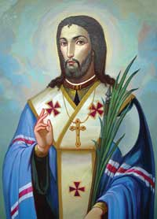

„Hoće li tko za mnom, neka se odreče samoga sebe, neka uzme svoj križ i neka ide za mnom.” (Mt 16,24)

Sveti Jozafat Kunčević, rođen 1580. godine u Ukrajini kao Ivan, bio je ključna ličnost u učvršćivanju jedinstva između istočnih kršćana i Rima. Iako potječe iz pravoslavne obitelji, s 20 godina prigrlio je katoličku vjeru zadržavši istočni obred te stupio u bazilijanski red pod imenom Jozafat. Kao svećenik i kasnije nadbiskup Polocka, isticao se strogim asketskim životom, noseći kostrijet i provodeći vrijeme u dubokoj molitvi, čime je unio novi duhovni žar u samostansku zajednicu i biskupiju.
Njegov neumoran rad na promicanju crkvenog jedinstva (unije) naišao je na snažan otpor ekstremnih protivnika. Unatoč stalnim prijetnjama smrću, Jozafat je svojim progoniteljima poručivao kako ih nosi u srcu i kako je spreman umrijeti za njih. To se i dogodilo 1623. godine kada je brutalno ubijen, a njegovo tijelo bačeno u rijeku Dunu. Njegova žrtva nije bila uzaludna jer je potaknula brojna obraćenja i značajno ojačala grkokatoličku (unijatsku) Crkvu.
Papa Pio IX. proglasio ga je 1867. godine prvim grkokatoličkim svecem, a njegovi posmrtni ostaci danas počivaju u bazilici sv. Petra u Rimu. Jozafat se štuje kao zaštitnik Ukrajine te brojnih župa u Poljskoj i Bjelorusiji. Njegov život ostaje trajni simbol težnje za jedinstvom kršćana i ljubavi prema neprijateljima koja nadilazi samu smrt.